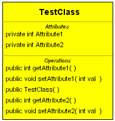

The IDE displays important information on elements in UML diagrams. For example, consider the information displayed on a Class element in a Class diagram.

The following table describes the sections of a Class diagram element:
| Section | Description |
|---|---|
| Top | Class name. Select this section to make the name editable.
|
| Middle |
Class attributes. In the Diagram editor, work with this section as follows:
In the Projects window, expand the class node to display its attributes. |
| Bottom |
Class operations. In the Diagram editor, the IDE offers a small scroll bar at the right of this section to let you scroll through hidden operations. Work with this section as follows:
In the Projects window, expand the class node to display its operations. |